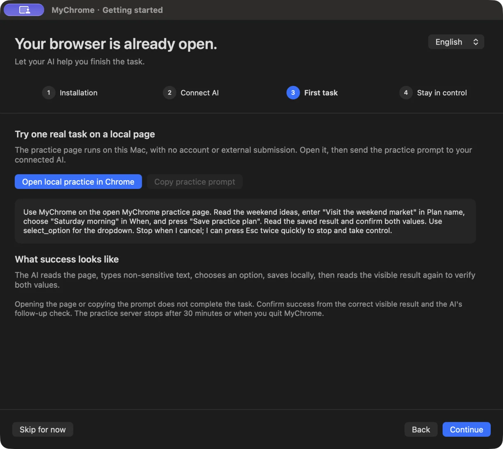

Make sense of this page
Ask your assistant to read the page you have open and find the information you need.
“Read this page and tell me what I need to fill in next.”
YOUR CHROME. YOUR AI. YOUR CALL.
Keep your signed-in pages and the context you already have. MyChrome lets your AI assistant help finish everyday tasks in the Chrome you use.
Apple Silicon · macOS 13+ · Google Chrome
Source install ·
Node.js + Xcode Command Line Tools

The same browser. A little less back and forth.
No extension · No debugging port · Local MCPSTART WITH THE WORK IN FRONT OF YOU
Ask your assistant to read the page you have open and find the information you need.
“Read this page and tell me what I need to fill in next.”
Enter information, choose options and check what the page shows after the work is done.
“Fill in these details, then check the saved result.”
Save suitable consecutive actions as a website routine. Supply fresh values for the next run.
“Keep these steps so I can use them again.”
These are example tasks. What works depends on the website, permissions and page state.
YOU HAVE THE LAST WORD
MyChrome uses your Mac’s real pointer and keyboard. Ordinary input is intercepted during takeover; press Esc twice quickly when you want control back.
Global pause prevents further input across agents. Stopping does not undo actions already sent. You also choose the input mode and pace.
Explore the controls ↗ONE SMALL TASK, START TO FINISH
An included offline practice page helps you get comfortable before bringing your own work.

Actual local task · 2× speed · pauses trimmed · browser toolbar cropped. Synthetic practice content.
BRING YOUR ASSISTANT
Codex and Claude Code can both use the browser tools. Native conversation features depend on the client. The getting-started guide supports English and Chinese; the main workspace currently uses Chinese labels.
| Capability | Codex | Claude Code | Other stdio MCP clients |
|---|---|---|---|
| Read and operate Chrome | Supported | Supported | Local stdio support required |
| Live text and replies in MyChrome | Supported integration + associated thread | Not available | No adapter provided |
MyChrome runs on the Mac whose Chrome it controls. Your AI client provides model access and its own account; its charges or subscription may apply.
MAKE YOURSELF AT HOME
Apple Silicon · macOS 13+ · Google Chrome. Node.js 24+ recommended; 20.19+ and 22.13+ also supported. Git and Xcode Command Line Tools required.
Full setup and permissions guide ↗git clone https://github.com/shuaige121/mychrome-mcp.git
cd mychrome-mcp
bash scripts/setup.shInstall from source · MIT open source · No npm release